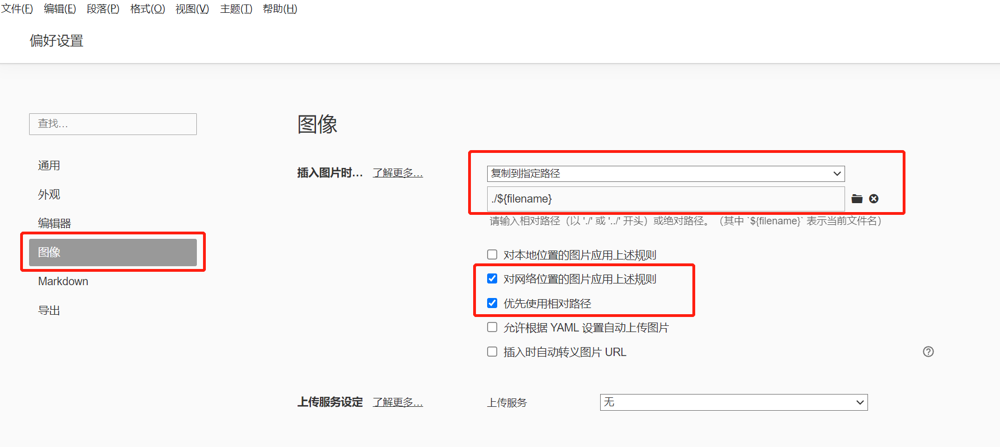

hexo-typora编写笔记
图片：
typora
将typora文本编辑器的网络/本地图片保存方式都设置为在当前目录下创建与文档同名的文件夹，将该文档引用到的图片自动保存到该同名文件夹中。
如图：

点开界面左上角 文件–偏好设置–图像进行上述的设置，之后我们在文档中插入图片时候，typora会自动为我们在当前目录下创建同名文件夹，并且将图片保存到该同名文件夹中。
hexo
在hexo中，图片路径的指定方式不同于typora
在hexo中，图片路径的指定方式不同于typora，例如同样引用cat.png, typora文章引用方式为：./{filename}/cat.png ，而hexo为 cat.png所以我们在typora中编辑好文章之后，需要修改图片引用路径，否则typora渲染的文章不能正常显示图片。
本博客所有文章除特别声明外，均采用 CC BY-NC-SA 4.0 许可协议。转载请注明来自 nccoder！